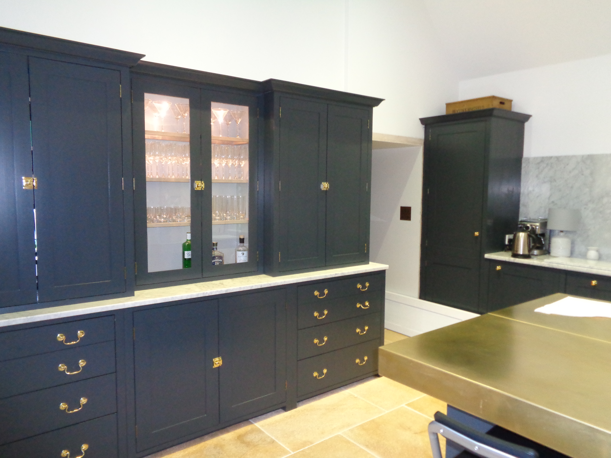

What we do
Thoughtful upgrades and refurbishment
We carry out renovation projects that improve how a home feels and performs, from structural updates to internal finishes. The aim is always to create spaces that are more usable, more comfortable and better aligned with the way you live.
Whether a project involves a full refresh or a more focused upgrade, our work is driven by quality, attention to detail and a clear understanding of the existing building.
